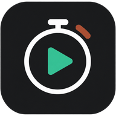

Çalışma Takip · Android
Kronometre, istatistik, Seanslar, takvim ve Planım aynı uygulamada. Süreyi kaydet; sonra çalışma kartındaki Seans tamamlandı ile dersini ve hedefini seç. Elle süre ekle, kayıtlarını düzelt ve hedeflerini düzenle. Kilit ekranındaki kontroller aynı kayıtları kullanır.
3.3.6: bitiş tarihi geçmiş seans hedefleri Kronometre sayfasındaki günlük özette artık görünmez; Seanslar sekmesinde korunur.
3.3.5: kilit ekranı bildirimini açma/kapama düğmesi yeniden Kronometre sekmesinde, Başlat/Kaydet düğmelerinin hemen altında.
- APK dosyasını açıp mevcut uygulamanın üzerine güncelle. Uygulamayı kaldırma.
- İlk açılışta internet bağlantısını açık tut; mevcut kayıtlar yüklensin.
- Bildirim için Kronometre sekmesinde Başlat/Kaydet düğmelerinin altındaki “Kilit ekranı bildirimini aç” düğmesine dokun.
- Telefon ayarlarında kilit ekranı bildirimlerini etkinleştir.
Çalışmalar, görevler, hedefler ve plan aynı bulut kaydında eşitlenir. İlk eşitlemeden sonra çevrimdışı değişiklikler telefonda saklanır ve bağlantı gelince gönderilir. Telefon ayarları eşitleme süresini etkileyebilir.
Android 8 ve üzeri. Android 16 test emülatöründe doğrulandı. APK arayüzü web ile aynı dosyalardan hazırlanır; gelecekteki arayüz değişiklikleri için APK güncellemesi gerekir.